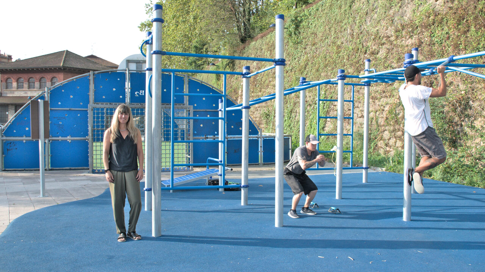
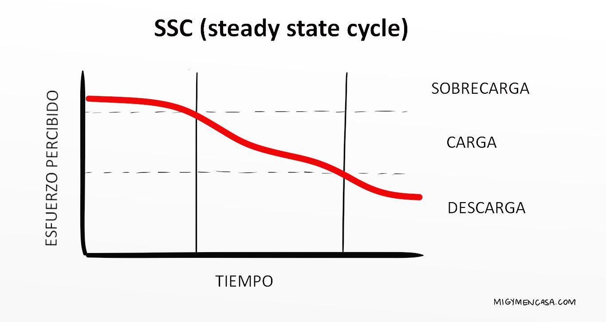

¿Qué beneficios aporta la calistenia?
La calistenia ofrece una serie de beneficios tanto para el cuerpo como para la mente. A continuación, exploramos algunos de los más destacados.
Accesibilidad
La calistenia se puede practicar en cualquier lugar, sin necesidad de equipos costosos. Esto la hace accesible para todos.
Mejora de la fuerza funcional
Los ejercicios de calistenia están diseñados para mejorar la fuerza funcional y la movilidad, lo que resulta en un cuerpo más equilibrado y eficiente.
Salud General
Practicar calistenia regularmente puede mejorar la salud cardiovascular, aumentar la resistencia y promover el bienestar general.
Gráfico de progreso
El progreso en calistenia se puede medir mediante gráficos que muestran mejoras en fuerza, resistencia y flexibilidad.